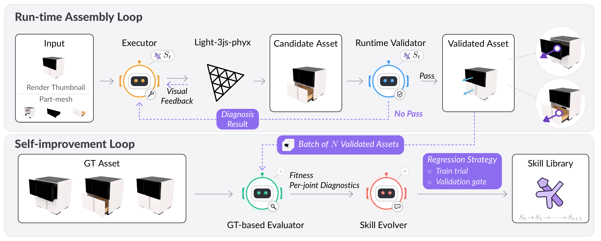
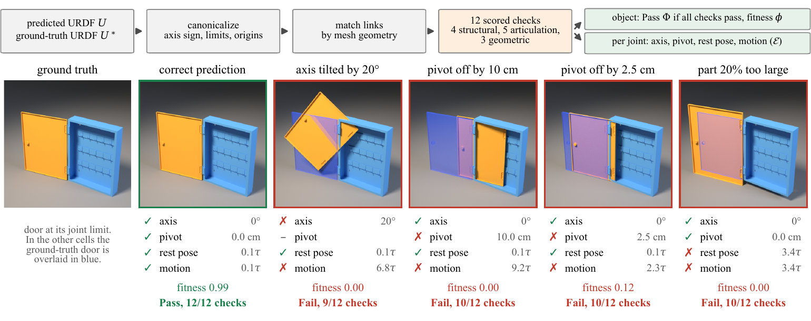
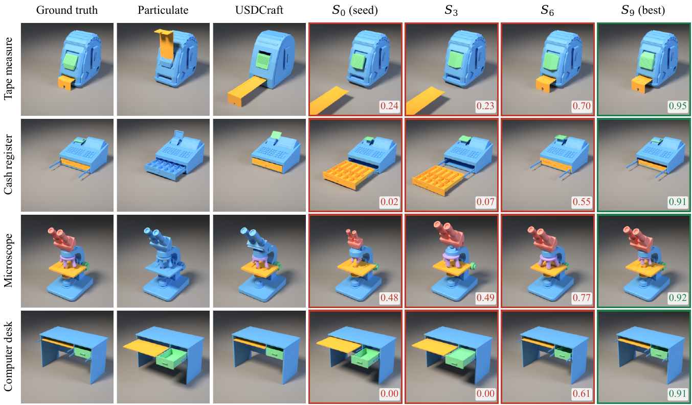
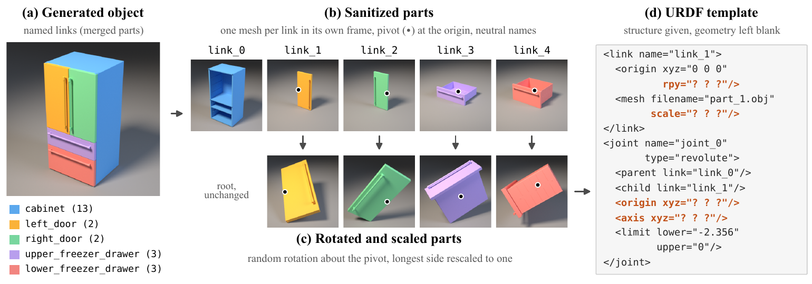
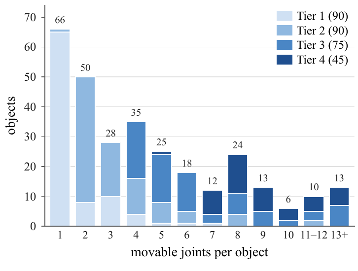

Articulated 3D assets, doors, drawers, faucets, appliances, are essential ingredients for physical simulation, embodied AI training, and interactive content, yet authoring them remains expensive, because every part must be placed at the right pose and scale and every joint must be given the right pivot and axis. Feed-forward models are trained on a fixed set of categories and struggle with out-of-distribution objects, and procedural scripts must be written by hand for every new category. LLM agents that operate 3D tools generalize further, but they follow a procedure that a human writes once, so the same mistakes recur on every object.
We instead let this procedure, the agent's Skill, improve from its own experience. An LLM-driven agent is given separate part meshes, a reference image, and a kinematic template, and must produce a valid description file. We present AgentAssemble, a self-improvement framework with two nested loops. In the inner Runtime Assembly Loop, an Executor agent assembles the parts under the current Skill, while a Runtime Validator script checks intermediate results without ground truth. In the outer Self-Improvement Loop, a GT-based Evaluator script scores each predicted URDF kinematically, invariant to naming, axis sign, and offset placement, and a Skill Evolver agent rewrites the Skill, including its checks and helper tools, from the resulting diagnostics. Both loops run on a lightweight, agent-native simulation and rendering engine on which many agents assemble in parallel.
We also introduce ArtiAssembly, a benchmark of 300 articulated objects with ground-truth URDFs and sanitized part meshes. Experiments show that, through self-improvement alone and without any human edit, AgentAssemble raises the fitness on objects of held-out categories from 0.474 to 0.681, and that the improved Skill transfers to other Executor models.
The Skill is a directory with a Markdown procedure, deterministic helper scripts, and the contract of the runtime. It is the only component that changes between rounds. The backbone LLM, the simulation runtime, and the evaluation stay frozen.

Runtime Assembly Loop. The Executor works through one tool, a persistent Python session with a frozen Assembly SDK. It imports the parts, authors links and joints, drives every joint through its range, renders the result, and revises the assembly from the checks of the Runtime Validator, a script that runs without ground truth.
Kinematic evaluation. The same mechanism has many URDF encodings. The GT-based Evaluator matches links by geometry and compares the motion of the predicted and the ground-truth URDF, so its score is invariant to naming, axis sign, and offset placement. It returns a pass predicate, a graded fitness, and per-joint diagnostics.
Two-layer regression strategy. The Skill Evolver first tests each edit on three train objects of the failure cluster that the edit addresses. The candidate Skill must then exceed the current champion on a separate validation split by 1.5 standard errors, with three sessions per object.

The run starts from a seed Skill S0 that states only the input, the output, and the SDK. It lasts twelve
rounds with gpt-6.1-sol as the backbone of both agents and receives no human edit. The
validation gate accepted three of the nine edited candidates, S3, S6, and S9, each by a paired
gain of 0.06 to 0.09 fitness. On the 40 held-out test objects, the final champion S9 raises fitness from
0.474 to 0.681 and Pass Rate from 30.0% to 52.5%.

S3 Root-registered rest-pose check
A helper segments the render and the reference image by link color, registers them on the fixed root link, and reports the offset of every link. A displaced link of the right size points to a misplaced pivot.
S6 Depth from the parent geometry
An image offset fixes two of the three coordinates of a pivot. The Skill takes the third from the attachment geometry of the parent, such as a bearing, a hinge edge, or a socket.
S9 Bearings from circular rims
A helper extracts closed circular edge loops from the meshes. Matching the rims of a child with those of its parent constrains the rotation of the part and the joint axis.

The Skills were obtained with gpt-6.1-sol only. Run unchanged with three other Executor models, S9 improves over the seed Skill by 0.165 to 0.256 fitness under every model.
| Executor model | Fitness S0 | Fitness S9 | Pass Rate S0 (%) | Pass Rate S9 (%) | Paired fitness gain |
|---|---|---|---|---|---|
| gpt-6.1-sol | 0.474 | 0.681 | 30.0 | 52.5 | +0.207 ± 0.041 |
| claude-opus-5-5 | 0.387 | 0.552 | 18.3 | 33.3 | +0.165 ± 0.034 |
| gpt-6.1-terra | 0.316 | 0.572 | 18.3 | 39.2 | +0.256 ± 0.039 |
| gpt-6-astra | 0.568 | 0.814 | 43.3 | 71.7 | +0.246 ± 0.049 |
Test split, 40 objects with three sessions each. The gain is the mean per-object difference with its standard error.
Particulate and USDCraft take the assembled mesh as input and predict the part segmentation and the kinematic tree themselves, whereas our Executor receives the separated parts at scrambled pose and scale together with the template. The inputs therefore differ, and the comparison serves as a reference on the same objects.
| Method | Model | Joints | Axis | Pivot | Motion | Objects |
|---|---|---|---|---|---|---|
| Particulate | – | 19.2 | 30.4 | 18.7 | 20.0 | 22.5 |
| USDCraft | astra | 83.2 | 84.0 | 81.3 | 83.2 | 75.0 |
| Ours, S0 | sol | 76.0 | 91.5 | 77.3 | 78.1 | 62.5 |
| Ours, S9 | sol | 89.1 | 93.9 | 87.5 | 89.9 | 85.8 |
| Ours, S0 | astra | 81.6 | 94.4 | 82.8 | 83.5 | 70.0 |
| Ours, S9 | astra | 93.6 | 96.5 | 94.1 | 94.1 | 92.5 |
Share of correct joints and of objects with all joints correct on the 40 test objects, in percent. Axis, Pivot, and Motion count the joints that are correct in that respect.
| Skill | Fitness | Pass Rate (%) | Gain over S0 |
|---|---|---|---|
| Seed Skill S0 | 0.474 | 30.0 | – |
| Human-curated Skill | 0.541 | 37.5 | +0.067 ± 0.024 |
| Without regression strategy | 0.475 | 30.0 | +0.001 ± 0.032 |
| Without diagnostics | 0.609 | 47.5 | +0.135 ± 0.030 |
| Full method (S9) | 0.681 | 52.5 | +0.207 ± 0.041 |
Test split with gpt-6.1-sol. Without the regression strategy every edit is kept, and the Skill of round 9 falls back to the level of the seed.
These are ground-truth objects of the ArtiAssembly test split. Pick an object and drag the sliders to drive each joint. Moving links are color-coded and the root link is grey. Drag to orbit and scroll to zoom.
ArtiAssembly holds 300 articulated everyday objects in four tiers of complexity, and every object belongs to its own category across 26 domains. For each object the geometry is merged into one mesh per link, every semantic name and material is replaced with a neutral index and a flat color, every non-root mesh is rotated and rescaled at random, and the joint origins, joint axes, link orientations, and link scales are blanked in the URDF template that the agent must fill.

| Dataset | Objects | Categories | Format |
|---|---|---|---|
| PartNet-Mobility | 2346 | 46 | URDF |
| ArtVIP | 992 | 37 | USD |
| Lightwheel | 259 | 14 | USD |
| ArtiAssembly | 300 | 300 | URDF |
ArtiAssembly also defines complexity tiers and releases the parametric source code of the geometry.

@article{agentassemble2026,
author = {Author names to be added},
title = {AgentAssemble: Self-Improving Agents for Articulated 3D Asset Assembly},
journal = {arXiv preprint},
year = {2026},
}